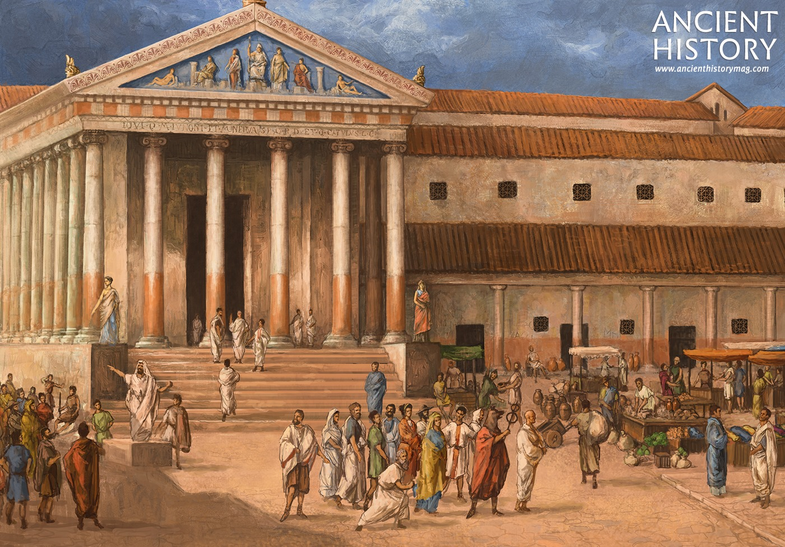

Introduction
Ancient Rome was a civilization that grew from a small town on central Italy's Tiber River into an empire that at its peak encompassed most of continental Europe, Britain, much of western Asia, northern Africa and the Mediterranean islands.

Roman Architecture
The Romans did not invent lime mortar but they were the first to see the full possibilities of using it to produce concrete. Concrete rubble had usually been reserved for use as a filler material but Roman architects realised that the material could support great weight and could, therefore, with a little imagination, be used to help span space and create a whole new set of building opportunities.
Roman Warfare Doctrine
In Roman culture martial values were highly regarded and war was a source of prestige for the ruling class where career progression came from successful military endeavour. Indeed, conflict in Roman culture went right back to the origins of Rome and the mythical battle between Romulus and Remus. This thirst for war combined with what Polybius stated as 'inexhaustible resources in supplies and men' meant that Rome would become a terrible and formidable foe for the peoples of the Mediterranean and beyond. However, there were also times when Romans more than met their match - such as against Carthage, Parthia and the Germanic tribes - or when Romans fought Romans such as the civil wars between Julius Caesar and Pompey or Vitellius against Otho, and then the carnage of ancient warfare reached even greater proportions.